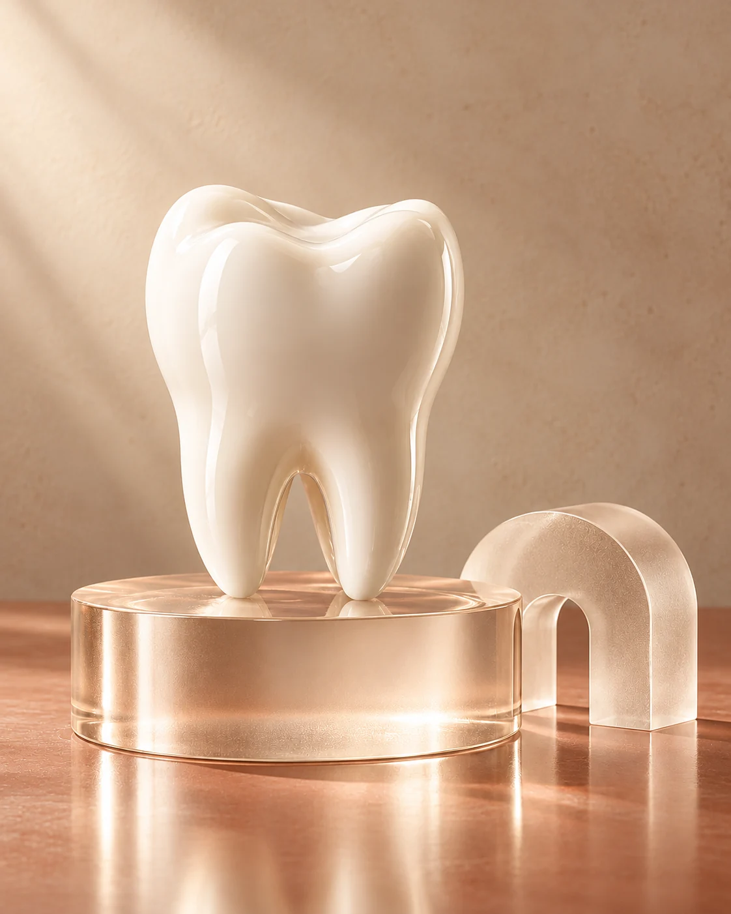

01
Understand the options
What is being proposed, and what alternatives are available?
01 / The possibilities for your smile
Your needs are individual. Your care should begin with understanding them.
Care categories.
One thoughtful approach.

02 / Take a closer look
Explore each area below. A personal consultation helps establish which options may be suitable.
A considered starting point for check-ups, professional cleaning and conversations about your oral health.
Explore cosmetic options with a clear conversation about your preferences, suitability and expectations.
Get to know alignment options and what a personalised assessment could involve.
Understand the options for restoring damaged or missing teeth through a clinician-led assessment.
A welcoming space for different ages, different questions and different stages of life.
Time to explain what brings you here, ask questions and understand possible next steps.
Treatment suitability, alternatives, risks and costs require an individual discussion with a qualified clinician.
03 / Your decision, supported
A treatment plan should make sense to you. There’s room to consider, compare and ask another question.
Arrange a conversationWhat is being proposed, and what alternatives are available?
What are the likely steps, possible risks and practical considerations?
What are the estimated costs, timing and follow-up requirements?
A guide for this visit to the page. Your selections are not saved.
Your needs. Your questions. A clearer understanding of what may be right for you.
Start with your priorities
Explore suitable options
Understand the next step
05 / A little more clarity
Your first visit is a chance to share your concerns and discuss your dental history. The clinician explains any proposed assessment and talks through the next steps with you.
Absolutely. Tell the team what would help you feel comfortable. You can ask questions, discuss breaks and share preferences before an examination.
Start with an assessment and a conversation with a qualified dental professional. Suitability, alternatives, costs and any risks should be discussed before you decide.
Any proposed treatment should be explained in plain language, including the steps, expected timing and costs. Ask for clarification whenever you need it.
06 / A considered next step
Your questions are a good place to start.